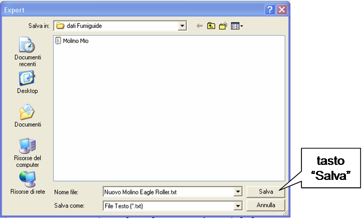
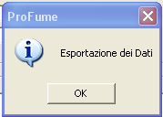
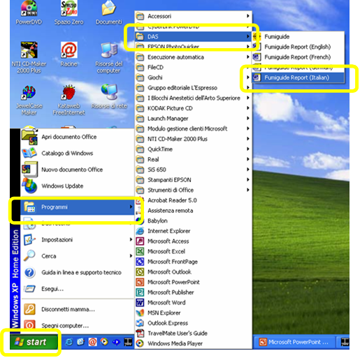
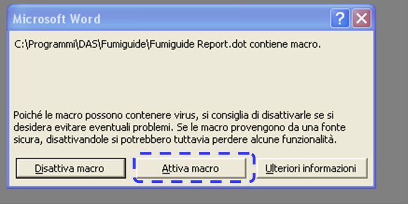
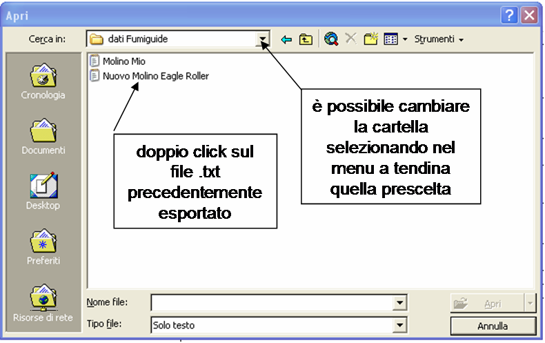
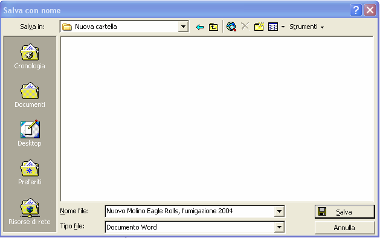
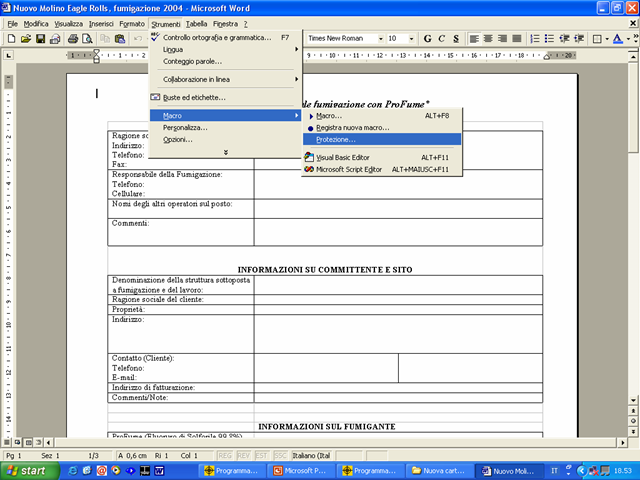

Esportazione dei dati Fumiguide ed elaborazione dei rapporti di fumigazione
Fumiguide
permette all’utente di esportare le informazioni sotto forma di file di testo, che può quindi essere aperto in MS-Word usando uno specifico modello di rapporto. Una volta aperto il file ProFume Fumiguide desiderato, per generare un rapporto di fumigazione bisogna cliccare su File nel Top Menu e quindi su "Esporta".

A questo punto appare la seguente finestra di dialogo in cui inserire un nome per il file esportato. Si raccomanda di asseganre al file di testo (*.txt) lo stesso nome del file ProFume Fumiguide (*.fum). Nell’esempio riportato il fumigatore ha nominato il file di testo "Pinnacle Bakersland.txt". Dopo aver digitato il nome del file cliccare su "Salva".

Avendo eseguito correttamente i passaggi, appare il seguente messaggio:

Cliccare ora su Avvio, poi su Programmi, DAS e quindi aprire il file "Rapporto Fumiguide.dot."

A questo punto appare la seguente casella di dialogo. Cliccate su "Attiva Macro".

Dopo aver cliccato su "Attiva Macro", appare un’altra Finestra Apri come quella seguente. La Finestra Apri dovrebbe farvi accedere alla cartella in cui avete precedentemente salvato il file esportato *.txt. Fate un doppio click sul file "Pinnacle Bakersland.txt" precedentemente creato.

Apparirà il seguente messaggio.Selezionate le unità con cui volete sia creato il vostro rapporto: inglesi o metriche.

Dopo aver cliccato su OK, vedrete le informazioni del file *.txt fondersi con il modello "Rapporto Fumiguide.dot". L’operazione richiede pochi secondo. Non preoccupatevi se vedete che il trasferimento automatico delle informazioni avviene molto rapidamente: è una cosa normale.
A questo punto dovrebbe apparire la seguente casella di messaggio. Nel rapporto finale figureranno tutte le informazioni (date, ore, concentrazioni di fumigante, calcoli del dosaggio, ecc.) inserite o calcolate nel programma Fumiguide.

Dopo aver controllato o modificato il rapporto, potete salvare il file cliccando su File nel Top Menu e selezionando Salva con nome.

All’apertura della finestra Salva con nome digitate il nome attribuito al file nella casella Nome file.

L’eventuale mancata trasformazione
del file *.txt nel documento MS-Word potrebbe essere dovuta ad un’impostazione
troppo alta della funzione Sicurezza Macro. Per modificare l’impostazione
Sicurezza Macro del documento MS-Word cliccare su Strumenti, poi Macro e quindi
Sicurezza.

Si raccomanda di selezionare il livello Medio che permette di attivare o disattivare le macro come descritto precedentemente.